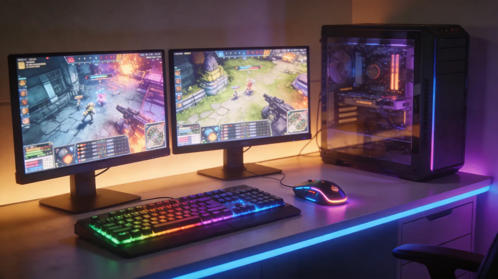

覆盖3000+热门游戏，500+全球专线节点，智能多线技术降低延迟80%，支持Windows/Mac全平台免费下载安装
免费下载 UU加速器
六大核心技术加持，为您的游戏体验提供全方位保障
同时连接多条优质线路，智能选择最优通道传输数据，即使单线波动也能无缝切换，保障游戏连接始终流畅稳定。
实时监测全球500+节点状态，毫秒级动态调整数据传输路径，自动避开网络拥堵节点，确保数据包以最短路径到达游戏服务器。
自研前向纠错算法搭配智能重传机制，有效降低网络丢包率至0.1%以下，告别因丢包导致的卡顿、掉线和人物回弹。
一个账号同时支持Windows、macOS、iOS、Android、PS5、Xbox、Switch、Steam Deck八大平台，数据同步，随时切换设备无缝加速。
游戏配置与存档自动云端备份，跨设备无缝同步，换设备也不怕丢失游戏进度，随时随地继续您的游戏旅程。
7×24小时在线客服团队，平均响应时间低于30秒。提供一对一网络诊断、节点推荐及个性化加速方案定制服务。
无论您在哪里、用什么设备游戏，UU加速器都能提供专业加速方案
针对Windows/macOS电脑端大型网络游戏深度优化，支持英雄联盟、绝地求生、永劫无间等热门端游专线加速，毫秒级延迟响应，让每一次操作都精准到位。
专为移动端设计的加速方案，支持iOS和Android设备，智能识别手游流量并优化传输路径，有效降低手游延迟和卡顿，让王者荣耀、和平精英等手游操作更流畅。
为PS5、Xbox、Nintendo Switch主机用户提供专属加速通道，解决主机联机匹配慢、下载更新速度慢、跨区联机高延迟等问题，畅享主机游戏联机乐趣。
针对Steam社区、商店、创意工坊及游戏下载提供专项加速，解决页面加载缓慢、社区无法访问等问题，同时优化Steam联机游戏延迟，畅快体验海量Steam游戏。
覆盖3000+热门游戏，以下是玩家最爱加速的爆款游戏
关于UU加速器的常见疑问，在这里找到答案